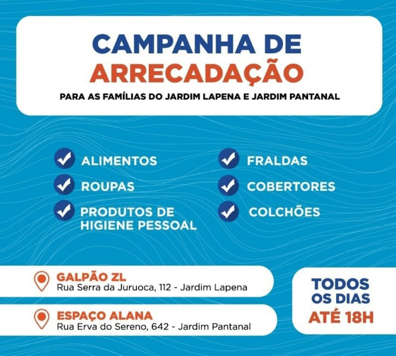

Conectar para construir
Projeto
Multi-plataforma online que tem por objetivo a construção de uma rede física de apoio e troca de conhecimento visando: Aprendizagem e prática profissionalizante para pessoas interessadas em uma mudança estrutural e construtiva dos seus lares e de regiões com alto índice de vulnerabilidade social;
Formação de parcerias entre profissionais, empresas e empreendedores da construção civil;
Parcerias no desenvolvimento de projetos para construir e reformar residências a baixo custo mais com material de qualidade a preços acessíveis visto que a comunidade não possui recursos para reformar e ou construir; Desenvolvimento de uma base de economia colaborativa, compartilhada, criativa e futuramente com moeda social para manutenção da troca entre seus moradores;
Em suma, uma plataforma versátil, intuitiva e informativa para conectar pessoas que desejam trocar conhecimento, habilidade e ou projetos de vida em trocar de sustentabilidade social dentro da construção civil.
O Hackathon do Inova ZL
O Hackathon do Inova ZL: “Se esse bairro fosse nosso? Ideias, desejos e soluções para o Jardim Lapena” é a maratona tecnológica promovida pela Fundação Tide Setubal em parceria com a LABHacker para promover projetos que trabalham memória, pertencimento e identidade com o Bairro. ⠀ Três vencedores entre os 135 participantes levaram um prêmio de R$10mil cada um para lançar suas ideias! ⠀ Um deles foi o Construlap, um projeto de capacitação e aplicação de conceitos da construção civil para que, através de um aplicativo, usuários possam aprender e ensinar a reformar moradias do Jardim Lapena. ⠀ O segundo colocado é um projeto que aplica aprendizados com o desenvolvimento do Plano de Bairro do Jardim Lapena e cria um colegiado-mirim paralelo para que as crianças do bairro possam contribuir com melhorias no território em cultura e lazer, meio-ambiente, saúde e cidadania. ⠀ “Circuito de memória” é o nome do terceiro grupo, responsável por criar um projeto que propõe a criação de um aplicativo e um museu itinerante que resgate as histórias afetivas e o memorial do Jardim Lapena a partir de oficinas e aproximação dos moradores com parceiros e profissionais que patrocinem e encampem o projeto.
Comunicado Urgente
O Galpão ZL está recebendo arrecadação de alimentos, roupas, produtos de higiene pessoal, fraldas, cobertores e colchões para as famílias do Jardim Lapena e do Jardim Pantanal afetadas pelas chuvas que atingiram a cidade no último dia 10/02. Ponto de arrecadação: Galpão ZL R. Serra da Juruoca, 112 - Jardim Lapena, São Paulo - SP, 08071-18 Horário das 09:00 às 19:00.
